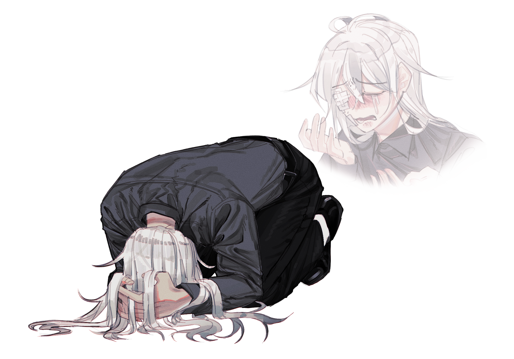

캐치 프레이즈
지방에 사는 덕후는 괴로워
한마디
“ 정말 오랜만에 외출한 건데… ”
왜, 왜 이렇게 되어버린 거지? 납득이, 납득이 안돼…. 내 인생은 왜 이런가요? 정말 쓸모없기 그지없어…. 하나도 제대로 풀리는 일이 없어. 진짜 짜증나게……. 인터넷은 터지… 아, 배터리가아아아….
외관
묘국님께 디자인 양도를 받았습니다.
그림은 본인이며, 구도는 사진을 참고했습니다. (링크 참조)
평범한 검은 와이셔츠에 슬랙스, 정장 구두. 도저히 정리되지 않는 머리 옆 삐죽털.
꽤나 사나워보이는 인상이나… 매일 울상이라 그리 티나지 않는다.
이름
황보유주
성씨가 황보, 이름이 유주.
애칭은 우주.
애칭을 영어로 표현하는 방법이 특이한데,
본래라면 space가 맞으나, spece라고 쓰는 듯 하다.
나이
25Y
그러니까… 그 나이에? 라는 말은 하지 말아주실래요.
아직 사회 초년생이거든요….
키/체중
172cm / 52kg
성격
Keyword: 음침한, 말이 적은, 감정적인
기본적으로 사람과 말을 섞어본 적이 거의 없는 히키코모리형-성격이다. ‘커뮤니케이션'이라는 행위 자체에 긴장감을 느끼며, 말을 거의 꺼내지 않기에 자기 주장 또한 제대로 하지 못하는 때가 대다수다. 때문에 주변에선 주로 음침하다는 평을 내린다. 간단히 표현하자면… 학창시절 늘 뒷자리를 차지하던 말 없는 고등학생 A같은 포지션.
허나 자아가 옅거나, 감정에 둔한 것은 아니다. 그는 보통의 사람보다 감정의 폭이 깊고, 빠르게 변화한다. 좋게 말하면 타인의 감정을 잘 캐치하고, 세밀한 감정까지 전부 표현할 수 있으나… 나쁘게 말하면 예민하기 그지없다. 허나 입 밖으로 낼 깡이 없으니 주로 속으로 삼키는 편. 이에 따른 스트레스도 상당한 듯 보인다. 어쩌면 돌이킬 수 없는 악순환의 고리일 수도….
기타
1) 토종 한국인. 덥디 더운 8월 15일생. RH A+형. INFP.
2) 좋게 말하면 기간제 프리랜서, 나쁘게 말하면 알바를 전전긍긍하는 (현재는) 백수.
3) 눈에 있는 거즈와 밴드는 다래끼와 상처 숨기기용. 별 건 아니고, 다래끼 난 자리에 또 다쳤다.
4) 그러니까, 지하철 탑승 전엔 서브컬쳐계에서 흔히 말하는 ‘즐거운 정모’를 하고 돌아가는 중이었다. 반 년에 1~2번씩 만나는 모임이라 끝내주게 놀다(핸드폰만 만지다) 온 편. 막차 시간에 늦을까봐 조금 일찍 출발했다. 지하철에 탑승해선… 별반 다르지 않다. 노래 들으면서 자다가, 잠깐 깨면 SNS… 또 졸리면 자고 일어나기를 반복. 배터리가 5퍼센트로 떨어지고 나서야 손에서 핸드폰을 놨다.
5) 운이 지지리도 없는 편. 이상하게 옛날부터 운이 없었다. 사소하게는 걷다가 신발 밑창이 떨어지거나, 크게는 대학교 입시에서 예비 3번이었는데도 떨어지기까지…. 덕분에 인터넷 상에서는 ‘인생파괴신' 같은 별명이 붙었다.
6) 인터넷 상에서는 꽤나 다른 모습인 듯 싶다.
소지품
1) 현금 12만원 및 신용카드, 신분증, 이상한 2D포토카드 등이 든 지갑. 지갑 겉부분에 겉 부분이 너덜너덜해진 스티커가 몇 붙어있다.
2) 투명-이라고 생각되지 않은, 누렇게 변색된-케이스를 씌운 핸드폰. 기종은 Z플립 4. 어째서인지 배터리가 다 되어 켜지지 않는다.
ㅡ 를 무슨 시원찮은 서류가방에 넣어놓았다. 들고 갈 가방이 없어서….
관계
없음. 부모님께 연이 끊기지 않은 것 만으로도 감지덕지….